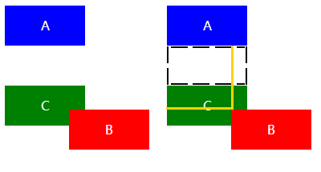
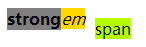
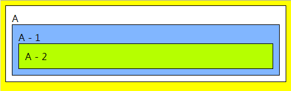
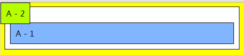
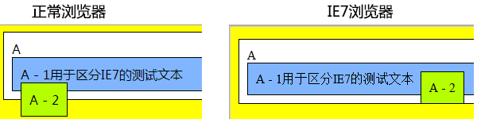
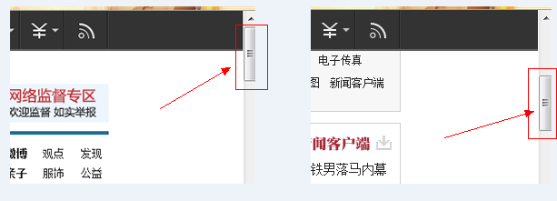
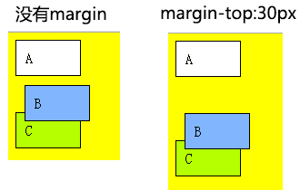
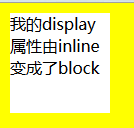

【css-4】position定位有哪几种？各有什么特点？
深圳分院小课堂第170期
分享人：覃腾波
目录
1.背景介绍
2.知识剖析
3.常见问题
4.解决方案
5.编码实战
6.扩展思考
7.参考文献
8.更多讨论
1.背景介绍
2.知识剖析
position概念
position 属性把元素放置到一个静态的、相对的、绝对的、或固定的位置中。position属性值:
position的属性值共有四个常用的：static、relative、absolute、fixed。还有不常用的：inherit、initial、sticky
知识详解
Static
所有元素在默认的情况下position属性均为static，而我们在布局上经常会用到的相对定位和绝对定位常用的属性top、bottom、left、right或者 z-index 声明在position为static的情况下无效。其用法为：在改变了元素的position属性后可以将元素重置为static让其回归到页面默认的普通流中。Relative
俗称的相对定位，重点在于对相对理解。我们此前说过每个元素在页面的普通流中会有“占用”一个位置，这个位置可以理解为默认位置，而相对定位就是将元素偏离元素的默认位置，但普通流中依然保持着原有的默认位置，并没有脱离普通流，只是视觉上发生的偏移。
strongemspan
请注意看，在这里我是有对span进行width属性的赋值（为100px）。但是我们可以看到span在运用了relative这个position属性值后，依然对width属性无效，换而言之，position: relative并没有改变行内元素的Display属性，这个概念非常重要（注意与接下来的absolute的区别）。
Absolute
俗称的绝对定位，绝对定位是相对而言的，怎么理解呢？应用了position: absolute的元素会循着节点树中的父（祖）元素来确定“根”，然后相对这个“根”元素来偏移。如果在其节点树中所有父（祖）元素都没有设置position属性值为relative或者absolute则该元素最终将对body进行位置偏移。应用了position: absolute的元素会脱离页面中的普通流并改变Display属性（重点）！
A
A - 1
A - 2

A
A - 1
A - 2
可以看到（A-2）最终是根据body来产生了位移
1）块状元素在position(relative/static)的情况下width为100%，但是设置了position: absolute之后，会将width变成auto（会受到父元素的宽度影响）。
2）元素设置了position:
absolute之后，如果没有设置top、bottom、left、right属性的话，浏览器会默认设置成auto，而auto的值则是该元素的“默认位置”。即设置position: absolute前后的offsetTop和offsetLeft属性值不变。
Firefox的话会直接将top、left设置成offsetTop和offsetLeft的值而非auto。
IE7下的表现更类似于float，会附加到父元素的末尾。

Fixed
在很长的时间里，这个属性值因为兼容性问题，并没有得到非常广泛的应用（IE6未实现该属性值）。fixed和absolute有很多共同点：1.会改变行内元素的呈现模式，使display之变更为block。
2.会让元素脱离普通流，不占据空间。
3.默认会覆盖到非定位元素上。
fixed与absolute最大的区别在于：absolute的”根元素“是可以被设置的，而fixed则其”根元素“固定为浏览器窗口。即当你滚动网页，其元素与浏览器窗口之间的距离是恒定不变的。

拓展知识

A
A - 1
A - 2

解决方案，父元素设置一个更大的z-index值即可
我的display属性由inline变成了block
因此，要注意到relative是并没有改变行内元素的呈现模式，而absolute是会改变行内元素的呈现模式，如果设置了absolute并不需要显式的的将元素display改成block。
absolute是一个能够独当一面的属性，其使用可以不要relative，当然，也可以不使用z-index。在默认情况下，元素应用了非static的position属性后，其就会有一个隐晦的层级，会居于普通元素之上，无需额外设置z-index属性值。
3.常见问题(与浮动相关)
div
左图中的div是没有设置top、left值的，而右边则设置了50px的偏移。
如果你不将float的元素的position设置成relative的话，你想通过设置float元素的z-index来的达到覆盖position:absolute是无效的。同理，float元素下面存在position: absolute的子元素，如果你不将float的元素的position设置成relative的话，absolute元素是不会定位到float元素的。
常用的清除浮动的方法有两种：
1.通过在容器中添加一个标签，设置该标签的样式为 clear: both
2.容器设置overflow: hidden
4.解决方案
5.编码实战
6.扩展思考
absolute与float有哪些区别？
7.参考文献
8.更多讨论
感谢观看
BY覃腾波